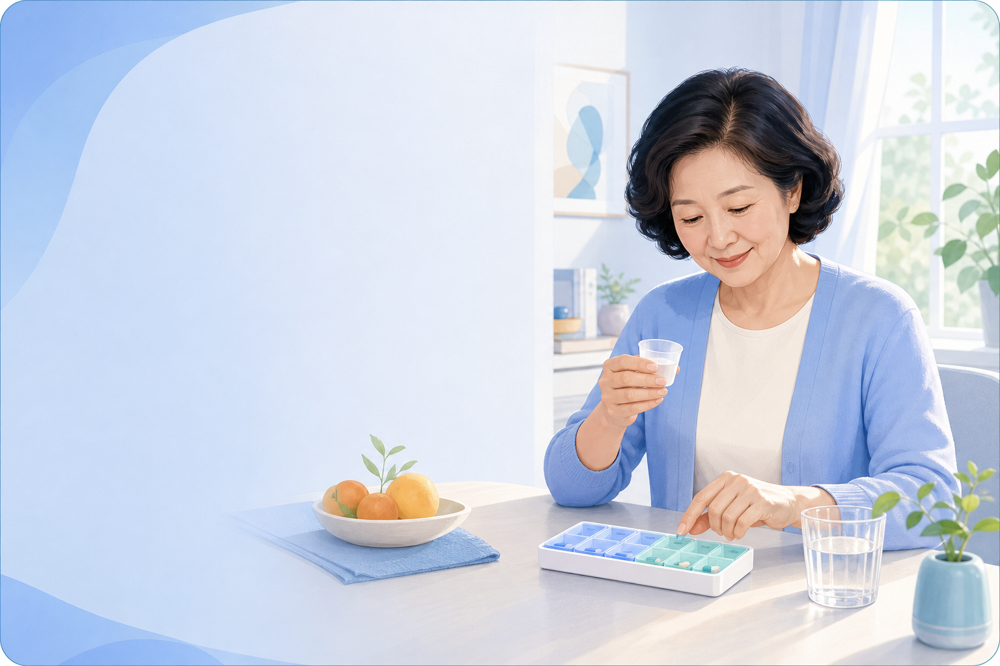
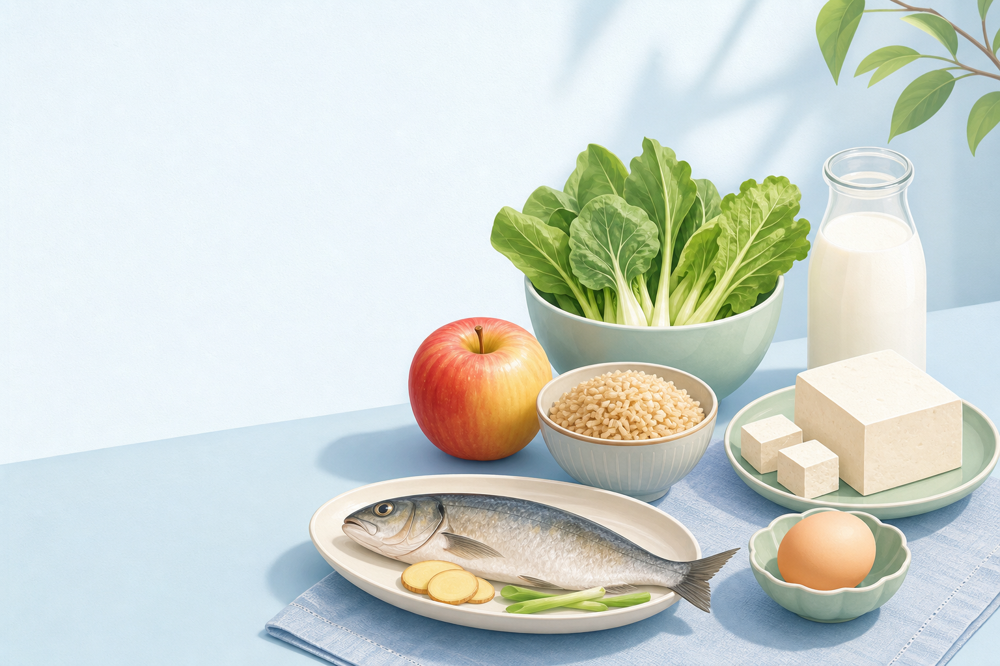

2 项待处理
今日用药
按时间顺序完成今天的用药记录

复查安排
还有 1 天
28
7 月
消化内科复查
上海市第一人民医院 · 张医生
肝功能、血脂、血糖等 4 项
医
2026-07-15
消化内科就诊
上海市第一人民医院 · 张医生
自免肝用药调整
检
2026-07-14
检查报告 · 3 张
肝功能、血脂、空腹血糖
药
2026-07-15 起
药物方案调整
甲泼尼龙剂量已更新，历史记录保持不变
复
2026-07-28
复查计划
消化内科 · 需检查 4 项

餐前快速判断选择食物，查看保守筛选建议
常见食物
食用建议每次约一个拳头大小，避免一次吃太多。
这是保守的通用筛选，不替代医生或营养师建议。
安心了解
一句话结论
为什么慢性病需要长期管理？
长期管理的目标，是降低波动和未来风险，让生活保持稳定。
来源：权威患者科普示例 · 2026-07-20
一句话结论
长期管理是有路径的
慢性病需要持续关注，但不代表每天都处于危险中。按医嘱用药、定期复查，并把变化告诉医生，就是当前最重要的事情。
这对现在意味着什么？
继续执行已有的治疗和复查安排。阅读这篇内容不需要改变当前用药。
下次可以问医生
“我最近的指标变化，是否需要调整下一次复查时间？”
权威患者科普示例 · 发布日期 2026-07-20
正式版将展示可核验的原始链接与翻译说明。